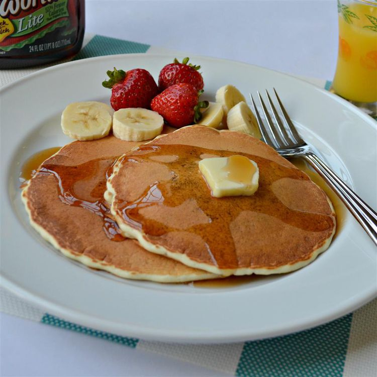

Ingredients
Directions
step 1
Combine flour, sugar, baking powder, and salt in a bowl; make a "well" in the center of the flour mixture. Pour milk, egg, and 1 tablespoon oil into the well. Mix until well moistened.
step 2
Place a griddle over medium-high heat; sprinkle a few drops of water onto the griddle. If the droplets bounce, the griddle is ready; add 2 teaspoons oil.
step 3
Spoon batter onto the griddle; cook until bubbles form and the edges are dry, 3 to 5 minutes. Flip and cook until browned on the other side, 3 to 5 more minutes. Repeat with remaining batter.
